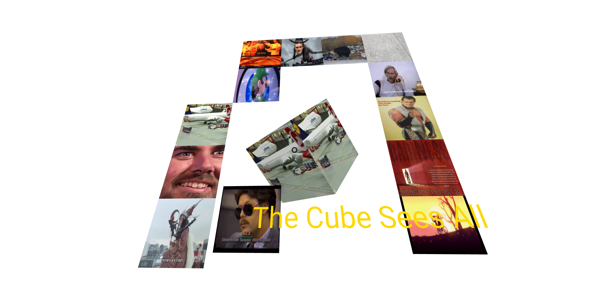

Broken WebVR
Run It Here
ACTUALLY FULLY FUNCTIONAL!
One of the few abandoned projects of mine to come out of DesertHacks 2017, Broken WebVR is an implementation of in-browser Head Mounted Device (HMD) based virtual reality. It utilizes the open WebVR Specification supported by MozillaVR and the WebVR Community Group.
This specific application leverages the A-Frame web framework (available at aframe.io) to quickly and efficiently simple primitive shapes and layerable image objects to create a 3D, naviagatable experience. Images and videos pulled from random Twitter accounts, all content rights reserved.